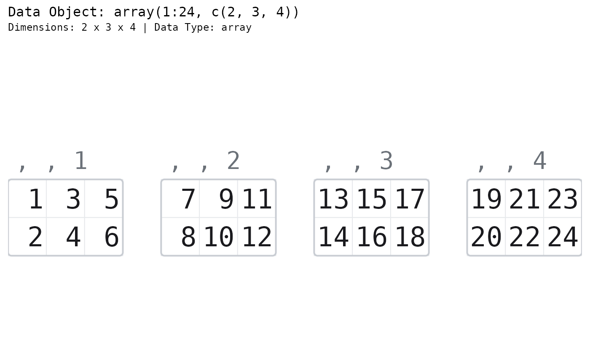
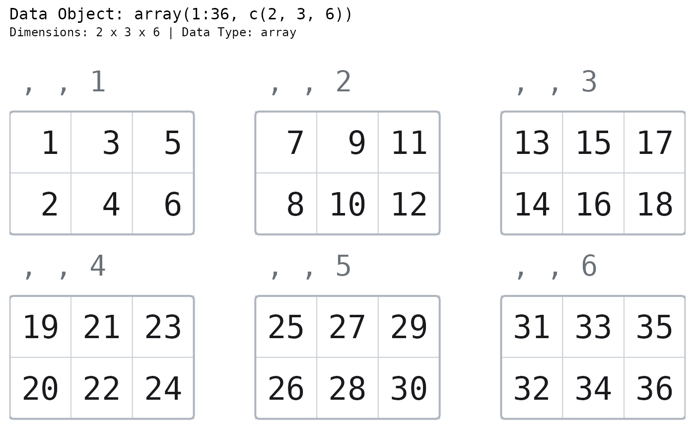
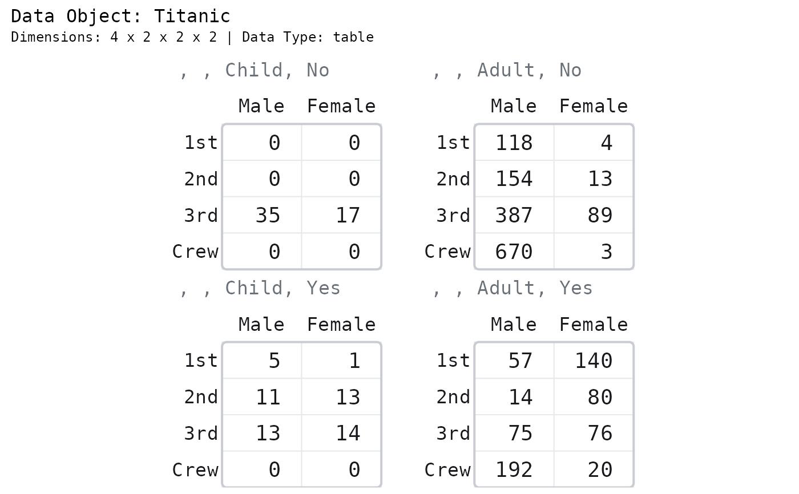
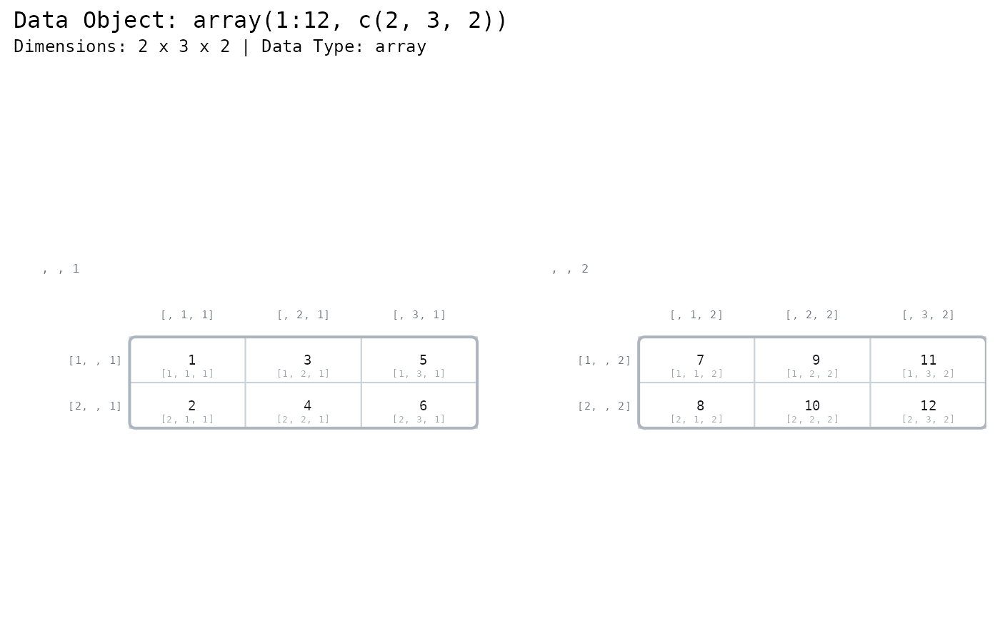
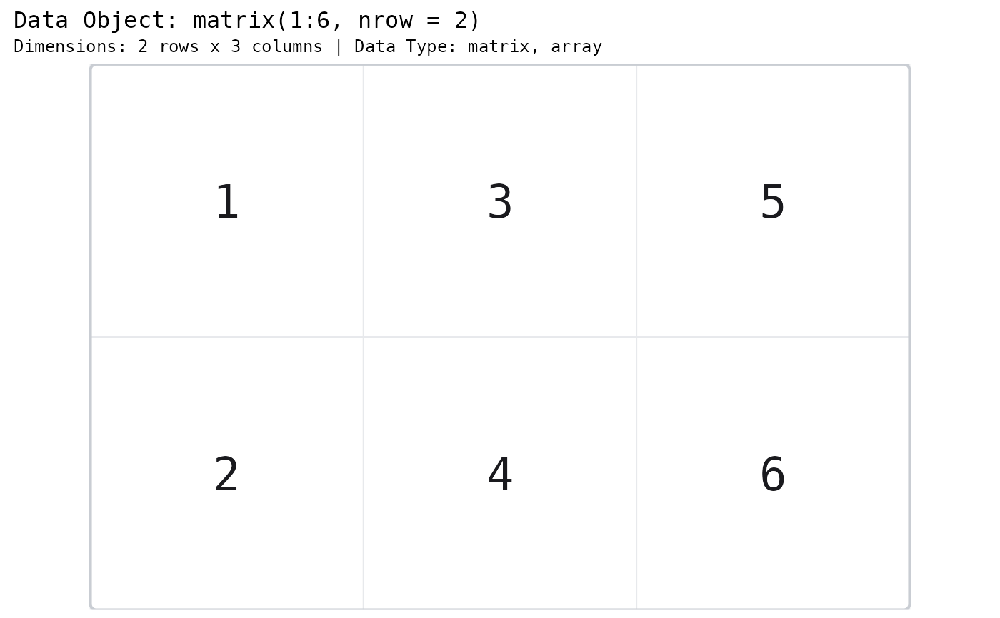
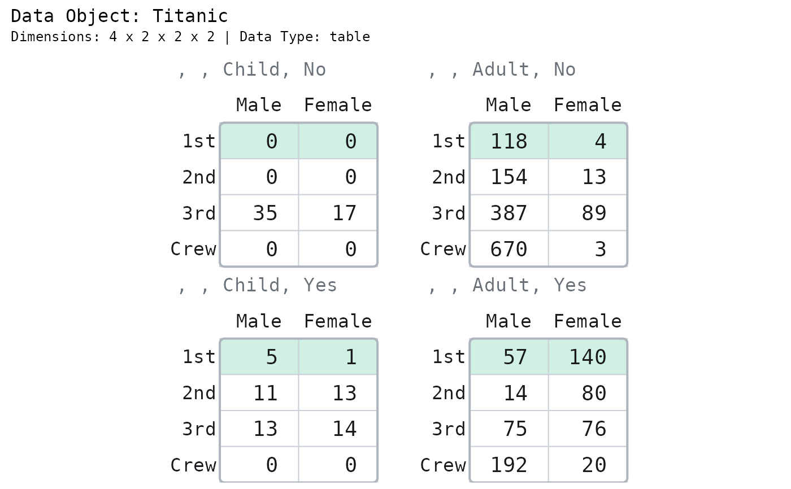
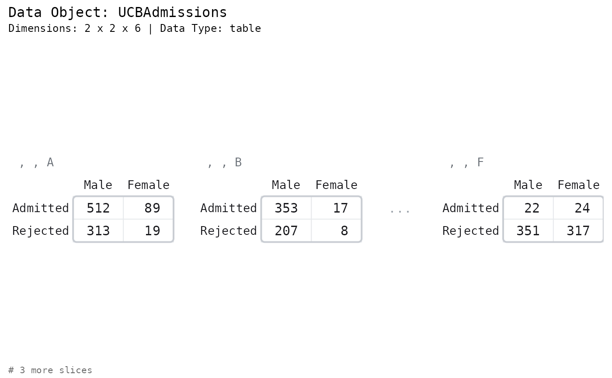
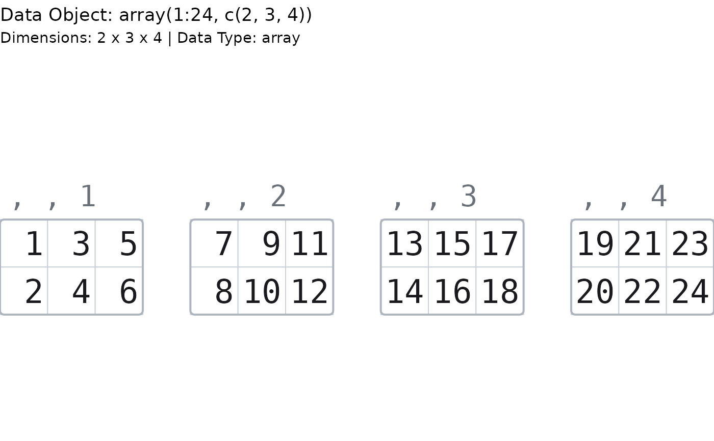
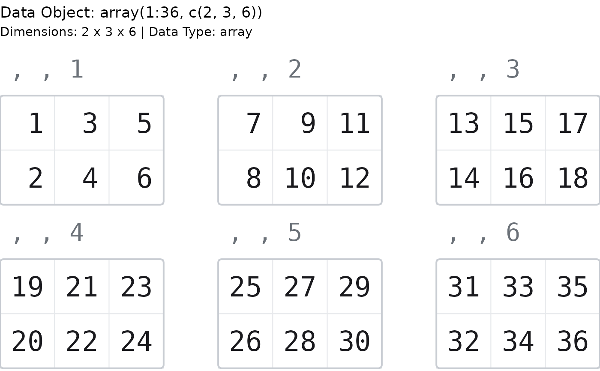
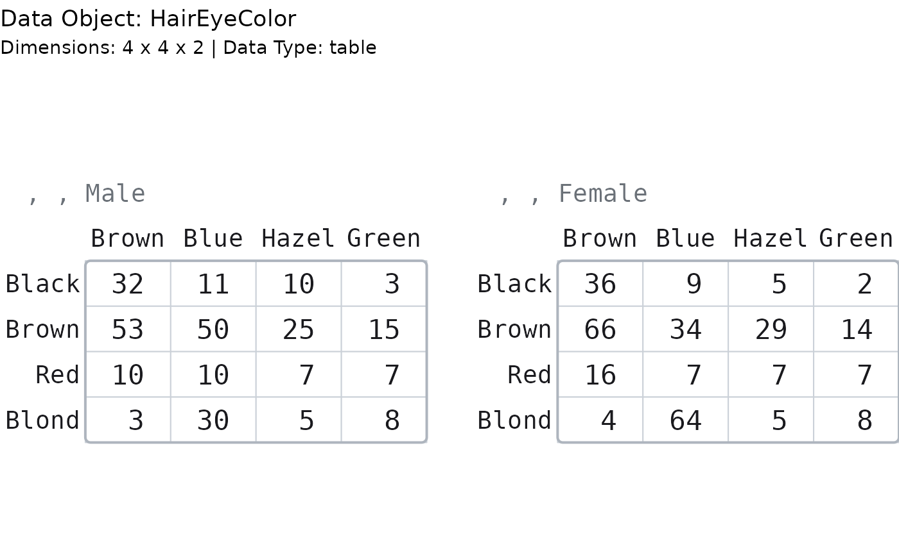

Generate a graph showing the contents of an array of any rank, laid out the way
print() lays one out: a block per slice, each under the , , Male, Child
subscript title that names it.
Usage
paint_array(
data,
show_indices = "none",
highlight_area = NULL,
highlight_color = "lemonchiffon",
graph_title = paste0("Data Object: ", deparse(substitute(data))),
graph_subtitle = NULL,
sigfig = 3L,
subtle_digits = c("insignificant", "rounded", "none"),
max_chars = 12L,
max_rows = NULL,
max_cols = NULL,
max_slices = 4L,
slices_per_row = NULL,
show_all = FALSE,
fontsize = NULL,
family = "mono",
palette = NULL,
show_dimnames = "all",
max_name_chars = 8L,
highlight_rows = NULL,
highlight_columns = NULL,
highlight_locations = NULL
)
gpaint_array(
data,
show_indices = "none",
highlight_area = NULL,
highlight_color = "lemonchiffon",
graph_title = paste0("Data Object: ", deparse(substitute(data))),
graph_subtitle = NULL,
sigfig = 3L,
subtle_digits = c("insignificant", "rounded", "none"),
max_chars = 12L,
max_rows = NULL,
max_cols = NULL,
max_slices = 4L,
slices_per_row = NULL,
show_all = FALSE,
fontsize = NULL,
family = "mono",
palette = NULL,
show_dimnames = "all",
max_name_chars = 8L,
highlight_rows = NULL,
highlight_columns = NULL,
highlight_locations = NULL
)Arguments
- data
An
array. Amatrixand atableare arrays and are drawn as such. Rank 1 is not drawn.- show_indices
Display indices based on location. A character vector, so several kinds of index can be asked for at once:
"none"(the default),"cell"([1, 2, 3], inside the cell),"row"([1, , 3], to the left of each block),"column"([, 2, 3], above each block), or"all".Every one of them is a subscript expression that RUNS – see the section above.
- highlight_area
Logical array the same shape as
data, marking the cells to fill. Build it withhighlight_data(), which masks an array of any rank. A length-one logical is recycled. Default:NULL, which highlights nothing.- highlight_color
Color to use to fill the background of a cell.
- graph_title
Title to appear in the upper left hand corner of the graph.
- graph_subtitle
Subtitle to appear immediately under the graph title.
NULL(the default) describes the data: its full shape (4 x 2 x 2 x 2) and its class.NAor""draws no subtitle.- sigfig
Significant digits drawn in black. Digits past the
sigfig-th are drawn in grey; nothing is discarded. Must be in1:15.- subtle_digits
Which digits are drawn grey.
"insignificant"(the default) greys everything past thesigfig-th significant digit;"rounded"greys only digits the rendering actually lost;"none"draws everything black.- max_chars
Strings longer than this are truncated with an ellipsis.
- max_rows, max_cols
Elide the middle of each block when the array has more rows or columns than this.
NULL(the default) takes the cap that suits the RANK of the thing being drawn:10by8for an array of rank 3 or more – tighter thanpaint_matrix()'s20by15, because the picture is several blocks wide and they share the device between them – and20by15for a rank-2 array, because a rank-2 array is a matrix and is drawn as one. PassingNULLrather than10here is the whole of what makespaint_array(m)andpaint_matrix(m)the same picture for a matrix of any size; a hard10would elide a 12x10 matrix thatpaint_matrix()draws whole. A number overrides both cases. As always, the decision is made on the dimensions alone, with no device consulted.- max_slices
Elide the slice axes when the array has more slices than this along either of them, drawing a
"..."block in place of the hidden ones. Default:4.The picture is
max_slicesmatrices wide, so this is the knob that costs the most: at4,TitanicandHairEyeColordraw whole andUCBAdmissionsdraws three of its six departments and says# 3 more slices. Raise it (or setshow_all) to see them all, at a smaller size.- slices_per_row
Wrap the slice blocks into a grid this many to a row, instead of the array's own layout.
NULL(the default) is today's picture exactly: a 3-D array in one row, a 4-D-or-higher array in its natural grid. A positive whole number takes the slices in their natural order – the order the block titles enumerate – and wraps them onto as many rows as it takes, likeggplot2::facet_wrap(). Every block keeps its FULL, honest slice title (, , 5stays, , 5), so wrap position is reading order, never a claim about the data: it cannot make a 3-D array read as a 4-D one. It composes withmax_slices– a wrapped array still elides and draws its"..."block – and a value at least the slice count simply draws one row. Amatrixhas one slice, so it is a no-op there.- show_all
Draw every cell, however small the text becomes. Warns when the text falls below the legibility floor.
- fontsize
Font size in points.
NULL(the default) fits the text to the device.- family
Font family.
"mono"by default.- palette
Colour palette for the drawing. One of
"mint"(the default),"slate","warm", or"classic"(the original look). Defaults to the"paintr.palette"option when unset. A named list of colours is also accepted.- show_dimnames
Which of the array's
dimnames()to draw. A character vector, becausedimnames()is a list with one slot per axis:"none","row","column","slice", or"all"(the default)."slice"is what puts the names in the block titles: with it, a block ofTitanicis titled, , Child, No; without it,, , 1, 1. An index lane the caller asks for wins the axis it names, exactly as it does for a matrix. Each name is truncated atmax_name_chars, exactly as a column name is.The title is the block's subscript, and not
print()'s full subscript line. When an array'sdimnames()are themselves named –Titanic's are (Class,Sex,Age,Survived) –print()writes, , Age = Child, Survived = Nowhere this writes, , Child, No. The axis names are omitted because the title is fitted against the width of the block it spans, and the long form costsTitanic48% of its font (15.7pt to 8.2pt at 7x5in); rank-3 tables such asHairEyeColorpay nothing for it, so the cost lands entirely on the largest arrays., , Child, Nois still the accessor:Titanic[, , 1, 1]returns the block it sits over.- max_name_chars
Longest a column name may be drawn before it is truncated. Default:
8. A matrix is one formatting unit, so every column of it is as wide as the widest: a long column name widens every cell in the picture. Row names sit in a gutter of their own, cost the values nothing, and are truncated atmax_charsinstead.- highlight_rows, highlight_columns, highlight_locations
Shorthand for
highlight_area, built for you withhighlight_data():highlight_rowsandhighlight_columnsmark that row or column of EVERY slice (the first two axes a block is made of), andhighlight_locationstakes a full coordinate per point – one column per dimension – to reach a single cell. Sohighlight_rows = 1is exactlyhighlight_area = highlight_data(data, rows = 1). Give several at once to fill their union. Supplyinghighlight_areatogether with any of these is an error. Default:NULL.
Value
paint_array() invisibly returns the resolved cell table. See paint_matrix()
for its components.
gpaint_array() returns a ggplot object.
Details
paint_array() draws on the current base graphics device. gpaint_array()
returns a ggplot object.
A matrix is an array, and this draws it. is.array(matrix(1:4, 2)) is TRUE,
and a rank-two array is simply the case of this picture with one block and no
title to put over it – so paint_array(m) and paint_matrix() draw the same
picture of the same matrix, down to the cell, because they run the same code.
The label under the cell is the expression you type
This is the promise the package is built on, and an array is where it is easiest
to break. On a 3-D array, a[1, ] and a[2, 3] are not "shorthand" – they are
errors:
a <- array(1:24, c(2, 3, 4))
a[1, ] # Error in a[1, ] : incorrect number of dimensions
a[2, 3] # Error in a[2, 3] : incorrect number of dimensions
a[2, 3, 4] # 24So every index this picture draws carries the array's full subscript arity, with
the slice filled in from the block the label sits in: the row gutter reads
[1, , 3], the column lane [, 2, 3], and the in-cell index [1, 2, 3]. Copy
any label off the picture, type it, and it returns the thing it was drawn beside.
A 4-D array reads [1, 2, 3, 2]. A matrix reads [1, 2], exactly as
paint_matrix() does.
show_indices = "all" is the call this section exists for.
The whole array is one formatting unit
A 1e15 in the third slice flips the first slice into scientific notation, and
the same number is drawn the same way in every block. An array is one homogeneous
object – a[1, 1, 1] and a[2, 3, 4] measure the same thing in the same units
– and R's own print() formats it to one common width across every slice. This
is the opposite of a data frame, whose columns are separate variables and are
therefore formatted separately.
The slices are not panels
They are blocks in a single cell table, and that is not an implementation detail.
The font size is fitted to one table, so every block in the picture is drawn at
the same size. Laying the slices out as real graphics panels – par(mfrow =),
layout(), or one grid viewport each – fits a separate font to each one, and
three slices of one array come out at 24, 12.4 and 23.1 points: the same number,
drawn at half the size, two inches to the left. Equal panels, unequal fonts.
See also
Other painters:
paint_data_frame(),
paint_list(),
paint_matrix(),
paint_size(),
paint_vector()
Examples
# Base graphics
# A 3-D array lays its slabs out in one line.
paint_array(array(1:24, c(2, 3, 4)))

# Wrap the same slabs three to a row instead. Every block keeps its true slice
# title, so this is reading order, not a fourth dimension.
paint_array(array(1:36, c(2, 3, 6)), slices_per_row = 3, show_all = TRUE)

# A 4-D contingency table is a real grid of blocks: across is the third
# dimension, down is the fourth.
paint_array(Titanic)

# The accessor lesson. Every label is an expression that runs: the value under
# `[2, 3, 2]` is exactly what `a[2, 3, 2]` returns.
paint_array(array(1:12, c(2, 3, 2)), show_indices = "all")

# A matrix IS an array, and this draws it -- the same picture paint_matrix() does.
paint_array(matrix(1:6, nrow = 2))

# \donttest{
# Highlight a row of every slice.
paint_array(Titanic, highlight_area = highlight_data(Titanic, rows = 1))

# Six departments, three drawn: the gap is always drawn, on the slice axis too.
paint_array(UCBAdmissions)

# }
# ggplot2 graphics ----
gpaint_array(array(1:24, c(2, 3, 4)))

# Wrap six slabs into a 2x3 grid, in reading order.
gpaint_array(array(1:36, c(2, 3, 6)), slices_per_row = 3, show_all = TRUE)

gpaint_array(HairEyeColor)
